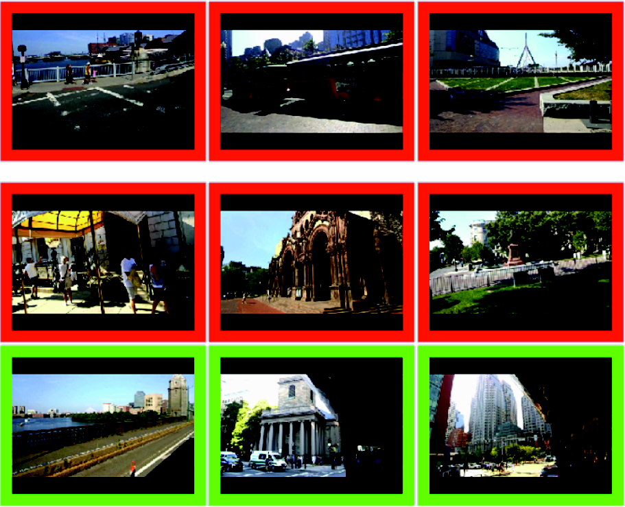
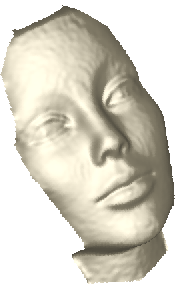
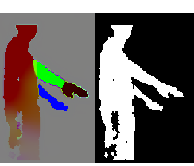
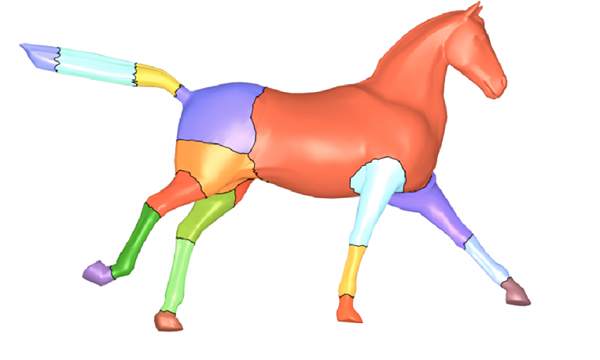

Publications
- 3D perception.- Probabilistic inference.
- Medical imaging.
- Matrix manifolds in computer vision.
- Coresets / approximation approaches.
- Optimization and variational computer vision.
|
Xin Huang, S.G. McGill, J.A. DeCastro, L. Fletcher, J.J. Leonard, B.C. Williams, G. Rosman CARPAL: Confidence-Aware Intent Recognition for Parallel Autonomy, (ICRA, RA-L), 2021. |
|
I. Gilitschenski, G. Rosman,A. Gupta, S. Karaman, D. Rus Deep Context Map: Agent Trajectory Prediction using Location-specific Latent Maps, (ICRA, RA-L), 2020. |
|
X. Huang, S. McGill, J. A. DeCastro, B. C. Williams, L. Fletcher, J. J. Leonard, G. Rosman, Diversity-Aware Vehicle Motion Prediction via Latent Semantic Sampling, arXiv, 2019. |
|
F. Naser, I. Gilitschenski, A. Amini, C. Liao, G. Rosman, S. Karaman, and D. Rus, Infrastructure-free NLoS Obstacle Detection for Autonomous Cars, IROS 2019. |
|
S. McGill, G. Rosman, T. Ort, A. Pierson, I. Gilitschenski, B. Araki, L. Fletcher, S. Karaman, D. Rus, J. J. Leonard Probabilistic Risk Metrics for Navigating Occluded Intersections, (IROS, RA-L), 2019. |
|
X. Huang, S. McGill, B. C. Williams, L. Fletcher, G. Rosman Uncertainty-Aware Driver Trajectory Prediction at Urban Intersections, arXiv (accepted to ICRA19), 2019. |
|
A. Amini, G. Rosman, S. Karaman and D. Rus, Variational End-to-End Navigation and Localization, arXiv (accepted to ICRA19, Best paper award candidate), 2018. |
|
F. Naser, I. Gilitschenski, G. Rosman, A. Amini, F. Durand, A. Torralba, G. W. Wornell, W. T. Freeman, S. Karaman, and D. Rus, ShadowCam: Real-Time Detection of Moving Obstacles Behind A Corner For Autonomous Vehicles, ITSC 2018. |
|
D. Hashimoto, G. Rosman, D. Rus, O. Meireles, Artificial intelligence in surgery: promises and perils, Annals of Surgery, 2018, 268.1, 70-76. |
|
A. Amini, W. Schwarting, G. Rosman, B. Araki, S. Karaman, D. Rus, Variational Autoencoder for End-to-End Control of Autonomous Driving with Novelty Detection and Training De-biasing, IROS 2018. video link |
|
G. Rosman, C. Choi, M. R. Dogar, J. W. Fisher III, D. Rus, Task-specific Sensor Planning for Robotic Assembly Tasks, ICRA 2018, candidate best conference paper award. |
| G. Rosman, L. Paull, D. Rus, Hybrid Control and Learning with Coresets for Autonomous Vehicles, IROS 2017. | |
| R. Cabezas, M. Blaha, S. Zheng, G. Rosman, K. Schindler, J. W. Fisher III On the Role of Representations for Reasoning in Large-Scale Urban Scenes, CVPR 2017 Earthvision workshop. | |
| L. Paull, J. Tani, H. Ahn, J. Alonso-Mora, L. Carlone, M. Cap, Y. Fan Chen, C. Choi, J. Dusek, D. Hoehener, S.-Y. Liu, M. Novitzky, I. Franzoni Okuyama, J. Pazis, G. Rosman, V. Varricchio, H.-C. Wang, D. Yershov, H. Zhao, M. Benjamin, C. Carr, M. Zuber, S. Karaman, E. Frazzoli, D. Del Vecchio, D. Rus, J. How, J. Leonard, A. Censi, Duckietown: an Open, Inexpensive and Flexible Platform for Autonomy Education and Research, ICRA 2017. | |
| M. Volkov, D. A. Hashimoto, G. Rosman, O. Meireles, D. Rus, Machine Learning and Coresets for Automated Real-Time Video Segmentation of Laparoscopic and Robot-Assisted Surgery, ICRA 2017. | |
| C. Baykal, G. Rosman, S. Claici, D. Rus, Persistent Surveillance of Events with Unknown, Time-varying Statistics, ICRA 2017. | |
| C. Baykal, G. Rosman, K. Kotowick, M. Donahue, and D. Rus, Persistent Surveillance of Events with Unknown Rate Statistics, WAFR 2016 video | |
 |
G. Rosman, D. Rus, J. W. Fisher III, Information-Driven Adaptive Structured-Light Scanners, CVPR 2016, accepted as oral (3.9%) video poster presentation video recording. Journal version accepted to IEEE Transactions on Computational Imaging, 2018. |
|
R. Or - El, R. Hershkovitz, A. Wetzler, G. Rosman, A. M. Bruckstein and R. Kimmel, Real-Time Depth Refinement for Specular Objects CVPR 2016, video |
|
R. Or-El, G. Rosman, A. Wetzler, R. Kimmel, A. M. Bruckstein, RGBD-Fusion: Real-Time High Precision Depth Recovery, CVPR 2015, video |
| 
|
M. Volkov, G. Rosman, D. Feldman, J. W. Fisher III, D. Rus, Coresets for Visual Summarization with Applications to Loop Closure, ICRA, 2015, video |
|
G. Rosman, M. Volkov, D. Feldman, J. W. Fisher III, D. Rus, Coresets for k-Segmentation of Streaming Data , NIPS, 2014. See also the proofs in the supplementary material, video |
| J. Straub, G. Rosman, O. Freifeld, J. Leonard, J. W. Fisher III, A Mixture of Manhattan Frames: Beyond the Manhattan World, Computer Vision and Pattern Recognition (CVPR), 2014. See also a much extended journal version: The Manhattan Frame Model – Manhattan World Inference in the Space of Surface Normals, PAMI, 2017 | |
| R. Cabezas, O. Freifeld, G. Rosman, J. W. Fisher III, Aerial Reconstructions via Probabilistic Data Fusion, Computer Vision and Pattern Recognition (CVPR), 2014 | |
| A. Dubrovina, G. Rosman, R. Kimmel Active contours for multi-region image segmentation with a single level set function, Scale-Space and Variational Methods, 2013, also in Journal version: Multi-Region Active Contours with a Single Level Set Function, PAMI, 2015 | |
| R. Mecca, G. Rosman, R. Kimmel, A.M. Bruckstein Perspective Photometric Stereo with Shadows, Scale-Space and Variational Methods, 2013 | |
| G. Rosman, A. M. Bronstein, M.M. Bronstein, X.-C. Tai, R. Kimmel, Group-Valued Regularization for Analysis of Articulated Motion, NORDIA workshop, European Conference on Computer Vision (ECCV) 2012, LNCS 7583, pages 52-62. [Supplementary Material] | |
| A. Wetzler, G. Rosman, R. Kimmel, Patch-space Beltrami denoising of 3D point clouds, IEEE Israel conference 2012. | |
|  | G. Rosman, A. Dubrovina, R. Kimmel, Sparse Modeling of Shape from Structured Light, 3DIMPVT 2012, also available as Technion technical report CIS-2012-05. |
| G. Rosman, A. Dubrovina, R. Kimmel, Patch-Collaborative Spectral Surface Denoising, Technion technical report CIS-2012-03, 2012, accepted to Computer Graphics Forum journal. The dataset used in this paper, as well as additional 3D scans, are available here. | |
| G. Rosman, A.M. Bronstein, M. M. Bronstein, R. Kimmel, Articulated Motion Segmentation of Point Clouds by Group-Valued Regularization, Eurographics Workshop on 3D Object Retrieval, 2012, Pages 77-84. | |
|  | G. Rosman, Y. Wang, X.-C. Tai, R. Kimmel, A. M. Bruckstein, Fast Regularization of Matrix-Valued Images, UCLA CAM report 11-87, 2011, accepted to European Conference on Computer Vision (ECCV) 2012, LNCS 7574, pages 173-186. See also the journal version, published in Methods and Applications of Analysis (MAA) special volume in honor of Stanley Osher's 70th birthday, Vol. 21, No. 1, pages 121-138, 2014. |
|  | G. Rosman, A.M. Bronstein, M. M. Bronstein, A. Wolf, R. Kimmel, Group-valued regularization framework for motion segmentation of dynamic non-rigid shapes, Scale Space and Variational Methods, 2011, Pages 725-736 . |
| S. Shem-Tov, G. Rosman, G. Adiv, R. Kimmel, A. M. Bruckstein, On Globally Optimal Local Modeling: From Moving Least Squares To Over-Parametrization, Book chapter in Innovations for Shape Analysis: Models and Algorithms, 2012. | |
| G. Rosman, S. Shem-Tov, D. Bitton, T. Nir, G. Adiv, R. Kimmel, A. Feuer, A. M. Bruckstein, Over-parameterized Optical Flow using a Stereoscopic Constraint, Scale Space and Variational Methods, 2011, pages 761-772. | |
| G. Rosman, X.-C. Tai, L. Dascal and R. Kimmel, Polyakov Action for Efficient
Color Image Processing, Color and Reflectance in Imaging and
Computer Vision Workshop, European Conference on Computer Vision, 2010. Appeared in Trends and Topics in Computer Vision Lecture Notes in Computer Science Volume 6554, 2012, pp 50-61
Also see an extended technical report:
G. Rosman, X.-C. Tai, L. Dascal and R. Kimmel, Polyakov Action for Efficient Color Image Processing, UCLA CAM report, 2010. | |
| Y. Devir, G. Rosman, A. M. Bronstein, M. M. Bronstein, R. Kimmel, On reconstruction of non-rigid shapes with intrinsic regularization, Proc. Workshop on Nonrigid Shape Analysis and Deformable Image Alignment (NORDIA), 2009 | |
| L. Dascal, G. Rosman, X.C. Tai, R. Kimmel, On Semi-implicit Splitting
Schemes for the
Beltrami Color Flow , Scale Space and
Variational Methods, 2009. Also see an extended technical report:
G. Rosman, L. Dascal, X.-C. Tai, R. Kimmel, On Semi-Implicit Splitting Schemes for the Beltrami Color Image Filtering, UCLA CAM report, 2010. And JMIV publication:G. Rosman, L. Dascal, X.-C. Tai, R. Kimmel, On Semi-Implicit Splitting Schemes for the Beltrami Color Image Filtering, Journal of Mathematics in Imaging and Vision, Volume 40, No. 2, 2011, 199-213. | |
| L. Dascal, G. Rosman, R. Kimmel, Efficient Beltrami Filtering of
Color Images via Vector Extrapolation, Scale Space and
Variational Methods, 2007.
For more details, please refer to the journal paper: G. Rosman, L. Dascal, A. Sidi, R. Kimmel, Efficient Beltrami Image Filtering via Vector Extrapolation Methods, SIAM Journal on Imaging Sciences, 2009. | |
| G. Rosman, A. M. Bronstein, M. M. Bronstein, R. Kimmel, Manifold Analysis by Topologically
Constrained Isometric Embedding, World Enformatika Conference
on Machine Learning and Pattern Recognition (MLPR), 2006, code available., as well as a
well-extended journal paper
G. Rosman, M. M. Bronstein, A. M. Bronstein, R. Kimmel, Nonlinear Dimensionality Reduction by Topologically Constrained Isometric Embedding, International Journal of Computer Vision, 2010 | |
| G. Rosman, A. Tsadok, D. Tal, A New Physically Motivated Warping Model for Form Drop-Out, International Conference on Document Analysis and Recognition, 2007. |